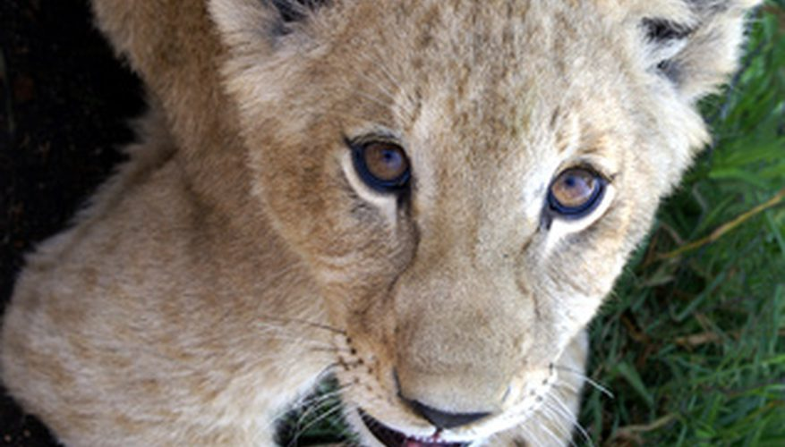

Panthera leo is the scientific name for a lion, while "leeu" is the Afrikaans name and "simba" is the Swahili name for the big cat. Baby lions are called cubs. These felines are the largest carnivore in Africa and the second largest species in the cat family, according to the Predator Conservation Trust. Adult males have the characteristic mane around their necks and shoulders, with the size, color and extension varying by geographic location.
Young cubs are vulnerable to various predators, including hyenas, leopards, jackals, pythons and martial eagles. The mother acts as protector by finding the safest hiding places she can, picking up each cub in her mouth one by one to move them. She must hunt during this time to maintain her health and milk supply, so there are times the cubs will be left alone.